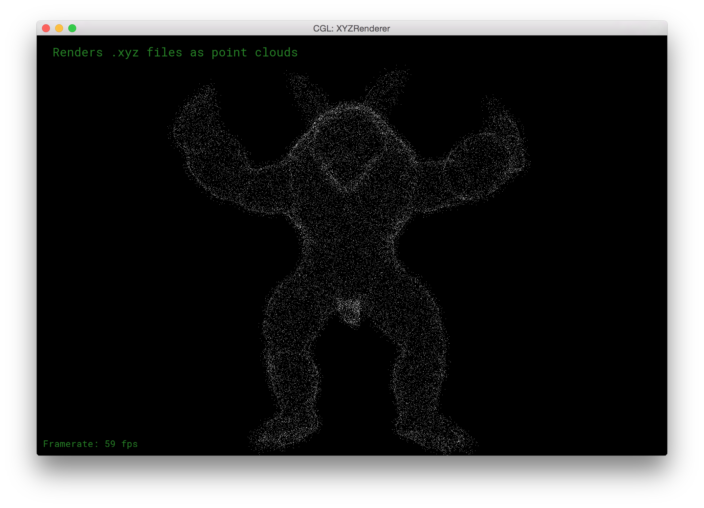
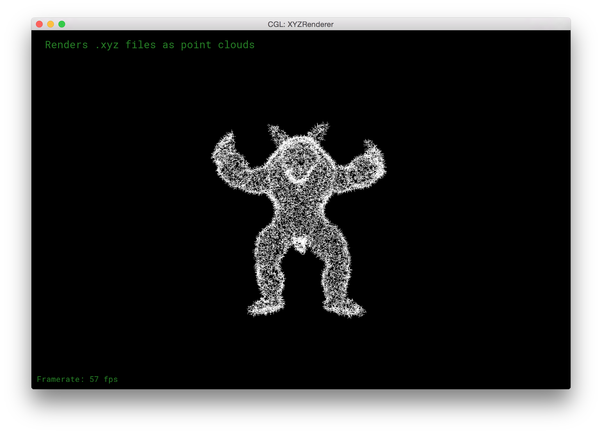
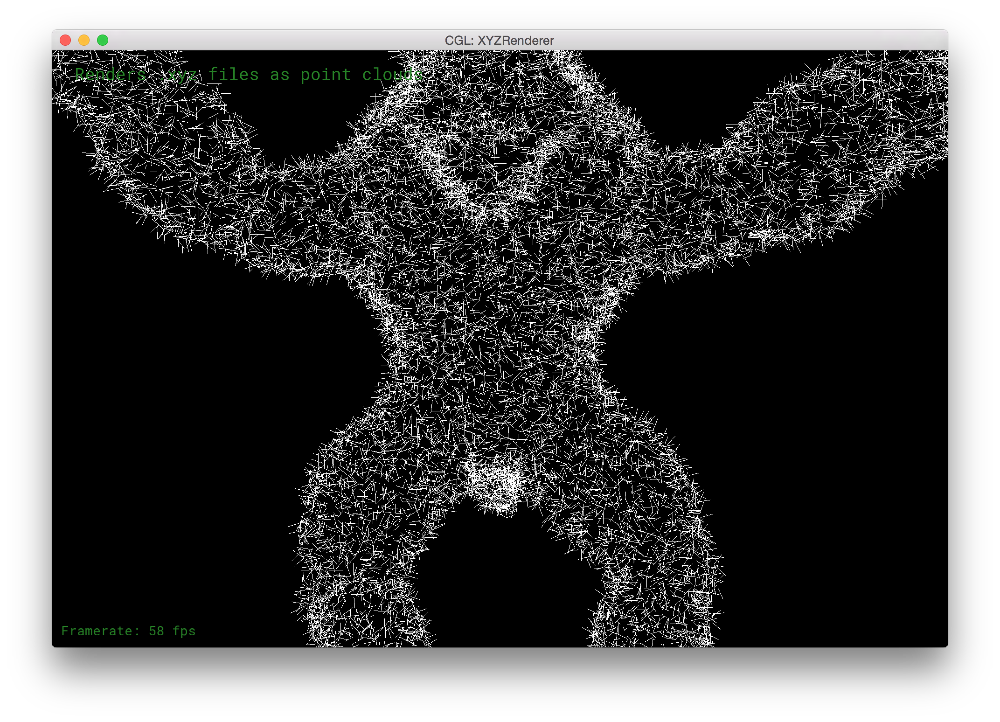
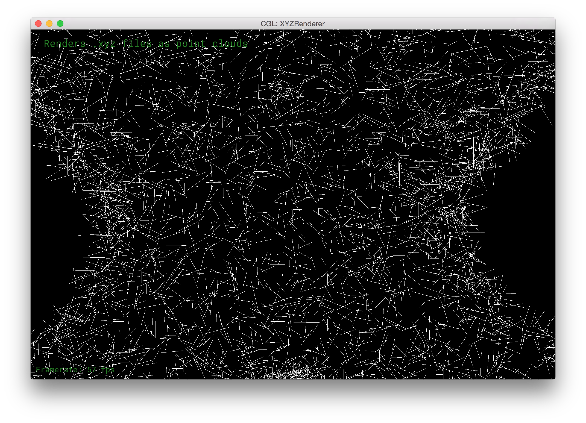
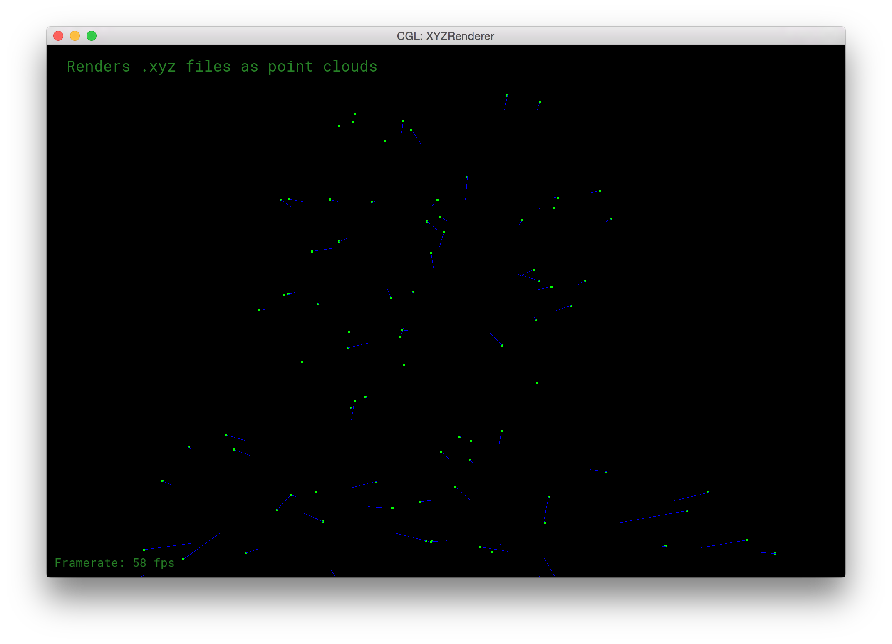
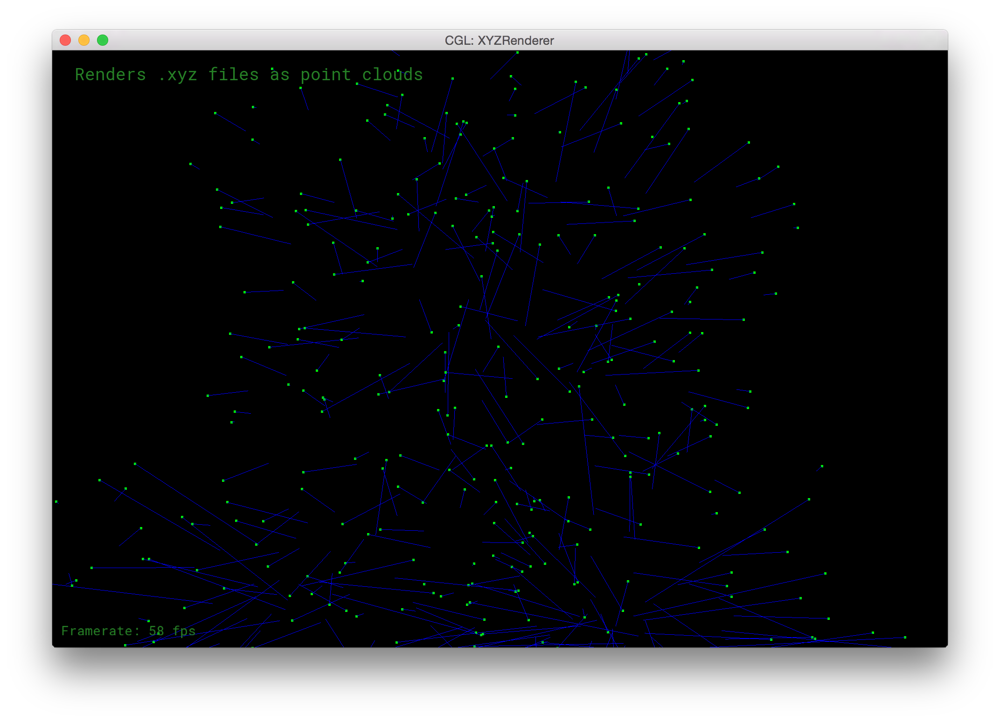
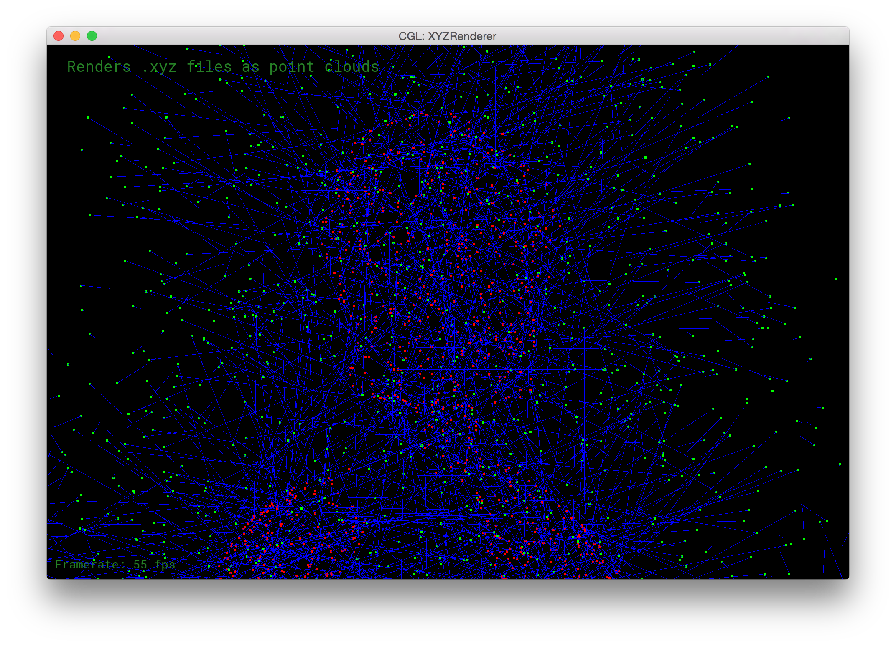

For this project, we start with a .ply file containing vertices and triangular face indices. This makes it easy to render the meshes provided using MeshEdit. However, all of the .ply files are missing vertex normal data and face normal data. This data is necessary for the ball-pivoting algorithm (BPA), so we had to figure out a way to extract vertex normals from a set of vertices and faces. Our approach was simple, construct the mesh with the provided faces, and use the MeshEdit code we used to compute vertex-based normals (for lighting) and instead use it for creating .txt files that contained the vertex-normal pairs we needed for BPA.
.ply
positions face_indices
The .ply file is deserialized into a set of positions and face_indices.
positions face_indices
positions normals
We use MeshEdit to convert face indices into face normals, and then interpolate around a vertex to find vertex normals.
positions normals
.txt
We serialize the positions and normals to a .txt file in order to access them later. This means we don't have to rely on MeshEdit inside of our BPA code because we already have computed the normals.
.txt
positions normals
We deserialize the .txt file into a set of positions and normals
positions normals
positions face_indices
This is where the BPA algorithm goes. It is the hardest part of the process, and it gives us back the face data.
positions face_indices
.ply
Here, we serialize our positions and face_indices into a .ply, and we've basically come full circle. This makes it easy to compare our input .ply and our output .ply.
We couldn't think of a way to test our code for creating vertex normals without viewing the normals, and our current rendering code would just display the point cloud like this:
We decided to add some code to display the normals, but no matter what depth we viewed them at, it was difficult to tell whether or not they were oriented correctly.
  Finally, we had the idea of adjusting a few parameters to make visual vertex normal debugging possible.
Then, if we zoom in on the mesh, we should see green before we see red, which would tell us that the normals are indeed facing outwards.
  
Using this method, we were able to verify our code for calculating vertex normals and produce the .txt data we needed, which has this format:
vx1 vy1 vz1 nx1 ny1 nz1 vx2 vy2 vz2 nx2 ny2 nz2 . . . . . . . . . . . . . . . . . . vxm vym vzm nxm nym nzm
Here is an example:
5.89458 11.7884 27.2832 -0.83141 -0.404449 0.381023 -53.3251 67.1044 -57.4501 -0.878005 -0.293709 0.377946 3.75049 16.5054 29.454 -0.736516 -0.579169 0.349439 -40.0742 -33.2375 10.7422 -0.859218 -0.0742719 0.50619 -52.8133 67.0694 -57.5725 -0.844274 -0.203288 0.495858 -52.4255 66.8347 -57.3804 -0.820147 -0.109775 0.561524